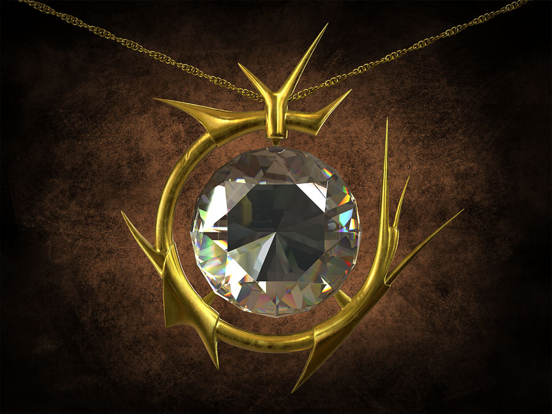

Mox Diamond
Mox Diamond est un autre membre de la famille emblématique des Mox dans le jeu de cartes "Magic: The Gathering". Contrairement aux Mox originaux, le Mox Diamond est sorti bien plus tard, dans l'extension "Stronghold" en 1998. Cette carte permet au joueur de gagner un mana de n'importe quelle couleur, mais avec une condition unique : lorsqu'il entre en jeu, le joueur doit défausser une carte de terrain de sa main, ou alors Mox Diamond est sacrifié. Cette condition de défausse ajoute une couche de stratégie, car les joueurs doivent équilibrer les avantages d'un mana rapide avec le coût de perdre un terrain. Mox Diamond est souvent utilisé dans des decks qui peuvent tirer parti de la défausse ou récupérer des terrains du cimetière, rendant ce coût moins handicapant.